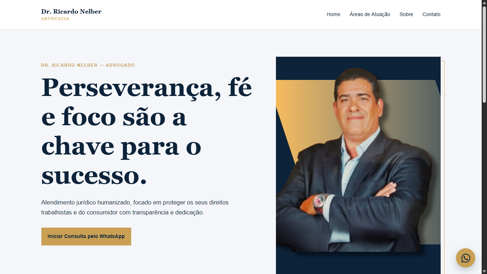
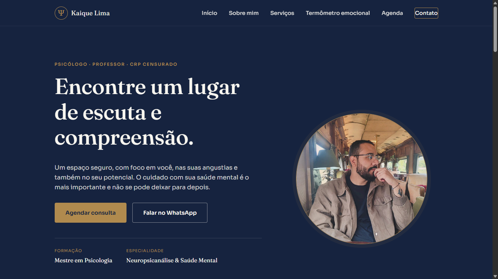
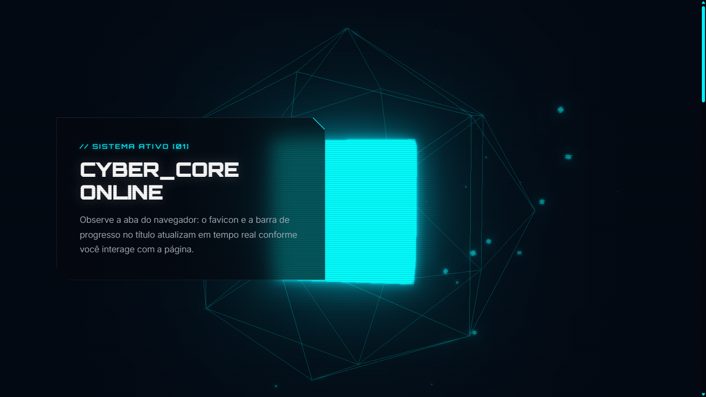
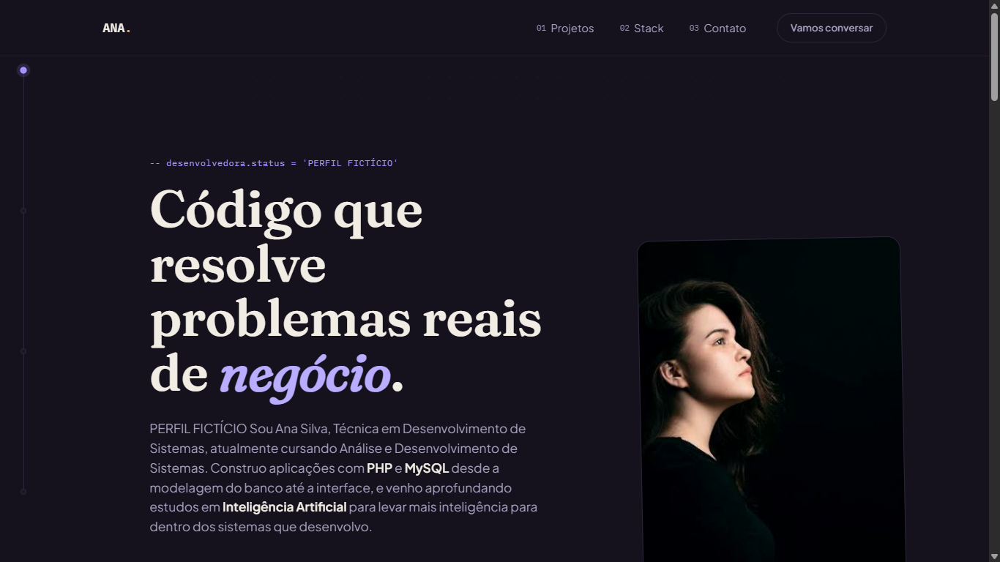

// projetos em imagem
Multimídia
Uma seleção visual de interfaces publicadas, protótipos e experimentos de desenvolvimento web.




Acessibilidade
Conteúdo que também funciona sem animação
As imagens possuem textos alternativos, dimensões declaradas e carregamento otimizado. O layout respeita a preferência do usuário por movimento reduzido.